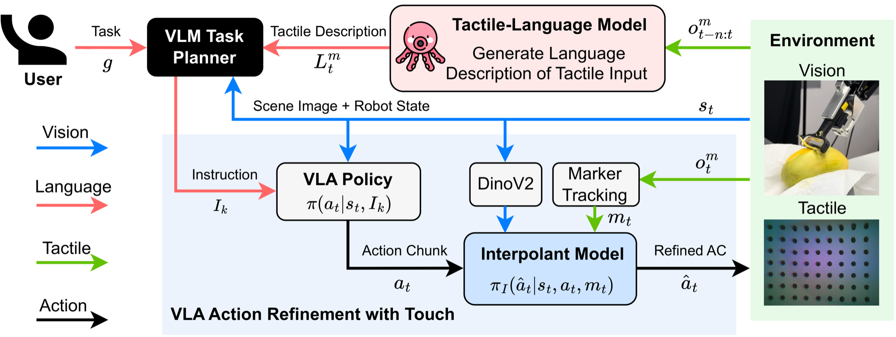

VLA-Touch
不重训基座，触觉分两路进入系统：语义化后喂给规划器，力向量喂给一个自训的动作精修器。
VLA-Touch: Enhancing Vision-Language-Action Models with Dual-Level Tactile Feedback
三项真机任务各 20 次：完整擦拭从 RDT 的 5/20 升到插值控制器的 12/20，完整削皮从 6/20 升到 10/20。
01这篇要解决什么？
VLA 的反馈通道几乎只有视觉与本体，抓没抓稳、表面滑不滑、按下去有多硬这几件事看不出来，把触觉喂进基座又缺大规模多模态数据。这篇的做法是不用触觉数据动基座权重，改在它的上游与下游各接一条触觉通路，分别检验触觉对规划与对控制各有多少用。
02先看一个场景
桌上放着一只带盖的杯子，看不出里面有没有水；旁边两块海绵外观相同，其中一块更粗糙；还有两只青芒，熟的那只更软。只按画面下指令的话，机器人只能瞎猜该把杯子放到哪、该拿哪块海绵。真到削皮那一步，刀刃贴着果皮滑过去也没有人发现。
03方法怎样运转？

- 01
两条触觉通路，基座权重一点不动
触觉被拆到两层。高层由 GPT-4o 充当规划器，读场景图与一句语言化的触觉描述，按提示每轮只写一条原语动作加一项要取回的信息；低层由 RDT-1B 生成 64 步动作块，再由一个外挂控制器按接触力改写。基座自始至终不吃触觉输入，标题所说的不微调，指的是不用触觉数据微调它。
- 02
语义触觉：现成的 Octopi 把 6 帧触觉转成一句话
触觉语言模型直接用现成的 Octopi，它为 GelSight 预训练，读入 6 帧触觉序列后给出粗糙度与硬度。力不在它的能力范围内，作者另用 OpenCV 的 marker 跟踪算法处理 7×9 标记阵列，得到合力向量与模长，连同经验参考值一起写成文本交给 GPT-4o。
- 03
低层触觉：作者自训的插值控制器
插值控制器沿用 BRIDGeR 的随机插值框架，把 VLA 的动作分布当源分布、专家动作当目标分布，以 MSE 监督训练，因此这一块是作者自训的。它的输入是冻结 DinoV2 给出的视觉嵌入、本体状态与那个低维力向量，历史长度取 2，它看不到语言。
- 04
滑窗精修、执行，再回到规划器
64 步动作块取前 48 步做精修，按非重叠窗口顺序处理，每执行完一窗就从上一窗终点接着往下走；控制器最高 8 Hz，执行也是 8 Hz，走笛卡尔 PD 控制，削芒果改用阻抗控制。一条指令跑完或步数超限，就取一次触觉观测交给 Octopi，再让规划器写下一条指令，直到目标达成。
- 05
训练成本落在哪几处
数据靠手把手示教采集，10 Hz，三项合计约 53 分钟：杯子 40 加 60 条，擦拭 40 加 60 条，削皮 60 加 120 条。RDT 先在无关 Franka 数据上微调 10 万步对齐动作空间，约 80 小时，再按任务在无触觉数据上各微调 2 万步、约 16 小时。
planner = GPT-4o（现成，只提示）; vla = RDT-1B（已用无触觉数据微调）
I = planner(goal, scene_image) # 每轮只出一条原语动作
while 任务未完成:
while 指令 I 未完成:
a[0:64] = vla(s_t, I) # 动作块，只取前 48 步送精修
for w in 非重叠切窗(a[0:48]):
m_t = marker_tracking(gelsight) # 7×9 阵列 → 合力 (X, Y, M)
a_hat = interpolant(s_t, w, m_t) # 作者自训，源分布=VLA 动作
执行(a_hat) # 8 Hz 笛卡尔 PD；削皮改阻抗控制
s_t, m_t = 更新观测()
if 执行失败: break # 谁判、依据什么，论文没有给出
L = Octopi(最近 6 帧触觉) # 现成预训练，给粗糙度与硬度
I = planner(goal, scene_image, L, I) # 语言化触觉回到规划器方法与结果的原文定位见本页引用。
04跟着这个场景走一遍
教学推演：回到上面的场景。第一步，GPT-4o 拿到顶置相机的画面和一句目标，按提示只写出一条原语动作——先轻轻夹一下杯子把它提起来，并注明需要取回的信息是重量。第二步，RDT-1B 把这条指令变成 64 步动作块，前 48 步交给插值控制器：marker 跟踪在 7×9 标记阵列上算出合力向量，控制器据此改写夹取轨迹，再按非重叠窗口以 8 Hz 一窗接一窗执行完。第三步，这段执行结束后系统取一次触觉观测，力的模长与方向以文本形式送回规划器，附录那段对话给出的参考是空杯约 0.55、满杯约 1.1，于是规划器判定杯里有水，下一条指令改成放到盘子上。第四步，换到擦拭与削皮就轮到 Octopi 出场：它读 6 帧 GelSight 序列，给出粗糙度与硬度的数值，规划器据此挑较光滑的那块海绵、较软的那只芒果。第五步，选定之后再回到低层，削皮全程靠触觉维持压力，论文的图 4 数到插值控制器削下 13 条、其中只有 3 条断，残差控制器 12 条里断了 5 条。要留住的是这套循环没有判断刚才那一步做没做成的环节：算法里写了执行失败就退出去重新规划，但由谁判、依据什么，论文没有给出；杯子提前脱手、海绵抓在边缘，都只能等下一轮触觉描述或画面碰巧反映出来。
05实验到底表现怎样？
硬件是 Franka Emika Panda 配 Robotiq 2F-140 夹爪，一指装 GelSight Mini，顶置与腕部各一台 RealSense，推理跑在单张 RTX 4090 上。三项真机任务为杯子、擦拭、削芒果；规划与操作对比都是每个条件 20 次，随机只在物体摆位与目标位置。
作者报告的实验结果 · v2
| 评测项 · 表 1 | RDT | 残差控制器 | 插值控制器 | 插值去掉触觉 |
|---|---|---|---|---|
| 杯子 · 放置 | 7/20 | 6/20 | 10/20 | 5/20 |
| 擦拭 · 完整 | 5/20 | 6/20 | 12/20 | 7/20 |
| 削皮 · 完整 | 6/20 | 7/20 | 10/20 | 5/20 |
| 擦拭 · 抓取 | 11/20 | 15/20 | 17/20 | 15/20 |
原始证据：方法总览：§3 ↗ · 触觉辅助规划：§3.1 ↗ · 操作结果：表 1 ↗ · 局限：§6 ↗
分母都是 20 次，一格差一次就是 5 个百分点，绝对量级都不大。抓取那一行说明触觉几乎没帮上忙，15/20 与 17/20 的差距在噪声量级内，收益集中在放置、完整擦拭、完整削皮这些持续接触的阶段。摘要里 42% 到 140% 的提升是相对值，回到原始计数只是 7 次变 12 次。
06收益来自哪里，又停在哪里？
消融与机制证据
表 2 把两条通路分别关掉：擦拭整任务从 12/20 降到 5/20 与 5/20，削皮从 7/20 降到 6/20 与 4/20。表 1 后两列拆控制器的输入，去掉触觉后杯子放置从 10/20 掉到 5/20，去掉视觉 7/20。附录 B 发现离散语言标签不如连续分类器输出，削芒果 60% 对 75%。
结论的适用边界
模型来源要分三层算。规划侧 GPT-4o 是现成的通用模型，只用提示、不做机器人微调；触觉语义侧 Octopi 是现成的预训练触觉语言模型，视觉嵌入用的冻结 DinoV2 也是现成的；插值控制器由作者自训，靠手把手示教的约 53 分钟数据，这是真正的前提成本。基座 RDT-1B 的情况要说清楚：所谓不微调只指不用触觉数据微调，实际上作者先在无关 Franka 数据上跑了 10 万步、约 80 小时对齐动作空间，又按任务各跑 2 万步、约 16 小时，所以这套系统不是拿来即用。三项任务各配一个插值控制器与一份示教数据，论文自己也写明只检验了物体摆位与目标位置上的泛化。作者另列两条硬约束：夹爪设置与 Octopi 预训练数据不一致，硬度判断因此会偏；控制器只跑到 8 Hz，25 Hz 以上的高频触觉没被用上。
07放回全书的脉络
与 Harness VLA 对读：两篇都不改策略权重，那边换的是调用时机与起步状态，这边换的是证据来源；缺的仍是 PhyAgentOS 的独立验收。
08把阅读变成一个小研究
在一条抓取流水线上把触觉分数分别只接进规划、只接进控制、两处都接，记录每一阶段各自的失败计数。
先自己回答：这项实验怎样才有解释力？
要看的不是总成功率，而是失败有没有换位置：规划侧触觉应减少选错对象，控制侧应减少滑脱与提前松手，混在一个数字里就分不开。
- 用自己的话说出这篇改变了哪个模块。
- 画出它的输入、输出和一次失败如何被处理。
- 复述一个结果，同时说清基线、指标与实验条件。这一问不给答案，材料在第 05 节。
先自己答，再看前两问的参考答案
这篇改了哪个模块改的是基座 VLA 的上游与下游，两头各挂一条触觉通路：上游让规划器多读一句语言化的触觉描述，下游让一个外挂控制器把动作块按接触力改写。基座权重在触觉这件事上一点没动，动作块的生成方式与指令接口都保持原样；规划器是现成的通用模型，不为机器人微调；触觉语义模型同样拿来即用。它没有加执行后的成功判定，也没有改变触觉进入系统的时间尺度——语义那一路是秒级，控制那一路封顶 8 Hz。
输入、输出与一次失败如何被处理输入分两路，两路看到的东西并不相同。规划器读顶置相机的场景图、任务目标，加上一句文本化的触觉描述：粗糙度与硬度由 Octopi 读 6 帧 GelSight 序列给出，力则不经过 Octopi，由 OpenCV 的 marker 跟踪算法在 7×9 标记阵列上算出合力向量与模长，再附经验参考值写成文本。插值控制器读的是冻结 DinoV2 的视觉嵌入、本体状态与那个低维力向量，历史长度 2。输出也是两级：规划器每轮写一条原语动作，交给 RDT-1B 生成 64 步动作块；控制器把前 48 步按非重叠窗口逐段改写，以 8 Hz 交给笛卡尔 PD 控制器执行，削芒果换阻抗控制，终止条件是规划器判定目标达成。失败这条通路是残缺的：算法 1 写了执行失败就跳出执行循环去重新规划，但论文没有给出谁判定这次失败、依据什么证据，既没有成功检测器，也没有恢复策略；实际能兜住的只有步数超限，以及下一轮规划器读到新的触觉描述后自己改主意。
不重训基座，触觉分两路进入系统：语义化后喂给规划器，力向量喂给一个自训的动作精修器。
↗带着位置回到原文
首发日期用于时间排序；以下方法与结果对应 v2。数据为论文作者报告，本讲义没有独立复现实验。
QA就这一页提问或讨论
对某个数字、某条边界或某个推演有疑问，欢迎直接留言：讨论按页面分开，回复会保留在 XinrunXu/awesome-agentic-robotics-papers 的 Discussions 里，需要一个 GitHub 账号。